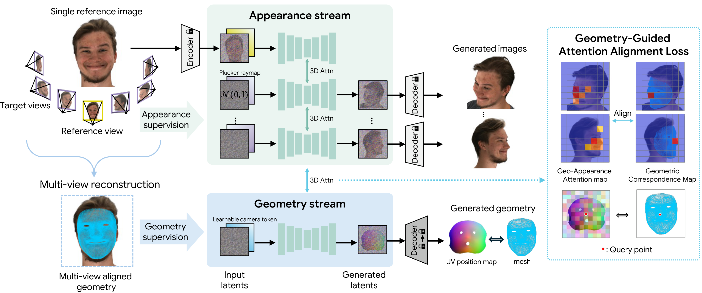
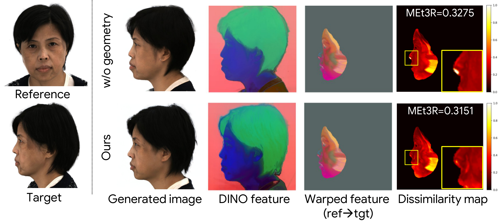
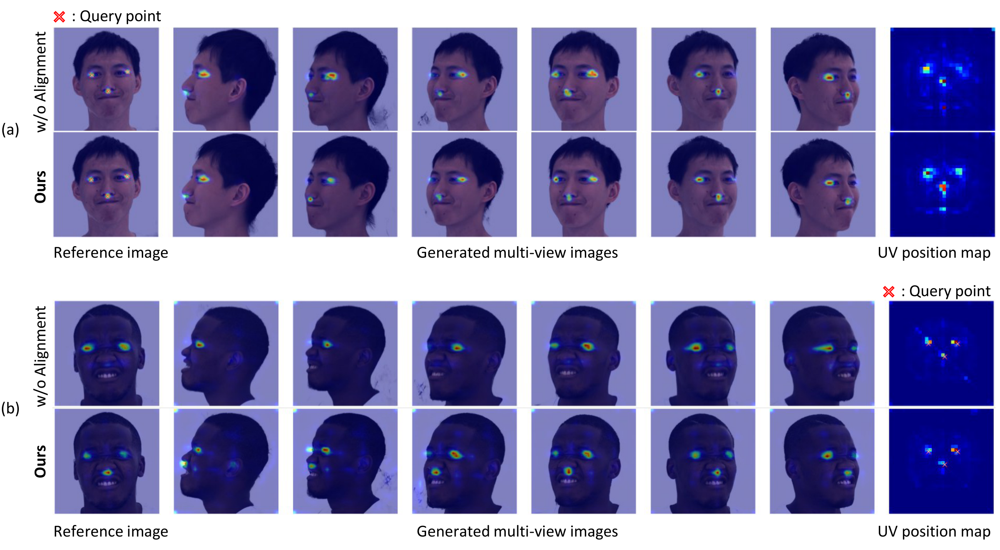
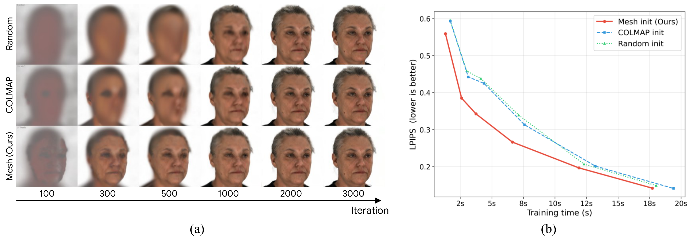

GeoFace: Consistent Multi-View Face Generation with Geometry-Constrained Diffusion
arXiv preprint
1KAIST AI
†Corresponding author
arXiv preprint
†Corresponding author
Generating photorealistic multi-view facial images has broad applications in 3D reconstruction, digital avatars, and immersive content creation. However, generating geometrically consistent images from a single input remains challenging: existing diffusion-based methods lack an explicit mechanism to enforce a shared 3D structure across views, often leading to inconsistent geometry under large pose variations.
To address this, GeoFace proposes a unified dual-stream framework for joint generation of multi-view RGB images and 3D face geometry, where the appearance and geometry streams interact through shared attention layers.

Overall architecture of GeoFace. Given a reference image and target camera poses, GeoFace extends a multi-view diffusion backbone with a dual-stream architecture. The appearance stream denoises target view latents conditioned on Plücker ray embeddings, while the geometry stream jointly denoises a geometry latent representing the canonical UV position map. Both streams interact through shared 3D attention layers, enabling geometry to act as an explicit cross-view consistency constraint.

Cross-view feature consistency analysis using MEt3R reveals that appearance-only models (w/o geometry stream) show significantly higher dissimilarity, particularly at facial boundary regions under large pose variations. Our dedicated geometry stream provides explicit structural tokens that anchor the appearance generation to a consistent 3D surface.

Without alignment supervision, cross-attention maps on the UV position map are diffuse and poorly localized. Our geometry-guided attention alignment loss produces sharper attention that correctly concentrates on the corresponding facial region across all viewpoints, enforcing 3D-consistent geometry-appearance correspondence.

We evaluate the jointly generated geometry as an initialization prior for 3D Gaussian Splatting from 24 generated views. Our mesh-based initialization provides dense and uniform Gaussian point placement over the entire face, producing sharper reconstructions during early optimization and consistently lower LPIPS compared to random and COLMAP-based initialization.

GeoFace generalizes robustly beyond controlled capture settings. Across diverse input types — including portraits under challenging lighting, heavily made-up faces, 3D-rendered characters, and stylized illustrations — GeoFace consistently produces geometrically coherent novel views while preserving the distinctive appearance of each input.
@article{choi2026geoface,
title={GeoFace: Consistent Multi-View Face Generation with Geometry-Constrained Diffusion},
author={Choi, Yeji and Choi, Jinhyeok and Min, Jaewon and Kwon, Minkyung and Kim, Jin Hyeon and Kim, Seungryong},
journal={arXiv preprint},
year={2026}
}